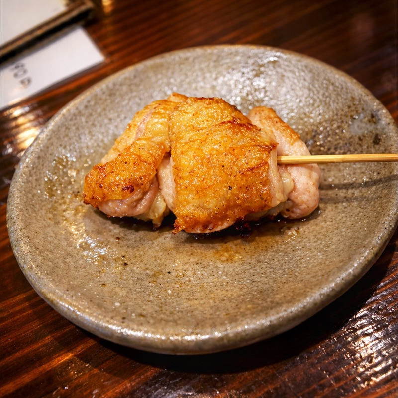

Our Secret 我们的秘密 비밀
Forged on Lava Stone 熔岩石上的匠心 용암석 위의 장인 정신

Deep beneath volcanic mountains, stone is born from fire. We bring that ancient heat to every skewer. Our lava stone grills retain heat with remarkable evenness, creating yakitori that is impossibly crispy on the outside and perfectly juicy within. The porous surface of the stone imparts a subtle mineral character you won't find anywhere else.
在火山深处，石头从烈焰中诞生。我们将这份远古的热量注入每一串料理。天然火山石均匀蓄热，烤出外酥里嫩的极致口感，多孔的石头表面还赋予食物微妙的矿物质风味，这是在其他地方品尝不到的独特滋味。
화산 깊은 곳에서 돌은 불로부터 태어납니다. 우리는 그 태고의 열기를 모든 꼬치에 담아냅니다. 천연 화산석이 균일하게 열을 머금어, 겉은 바삭하고 속은 촉촉한 최고의 야키토리를 만들어냅니다. 다공성 석재 표면이 선사하는 은은한 미네랄 풍미는 다른 곳에서는 맛볼 수 없는 특별함입니다.
And then... lava stone pizza? 还有......熔岩石烤披萨？ 그리고... 용암석 구이 피자?
Yes. Our lava stone doesn't just grill skewers. We bake thin-crust pizza on it too. The stone's radiant heat gives the dough a wood-fired crispness with a soft, pillowy center. It's the surprise that keeps regulars coming back. 没错。我们的熔岩石不只是烤串。我们还在上面烤制薄底披萨。石头的辐射热赋予面团柴火般的酥脆外皮和柔软蓬松的内心。这个惊喜让常客们一来再来。 네, 맞습니다. 우리의 용암석은 꼬치만 굽지 않습니다. 씬크러스트 피자도 구워냅니다. 돌의 복사열이 반죽에 장작불 같은 바삭함과 부드럽고 폭신한 속을 선사합니다. 단골들이 계속 찾아오는 이유입니다.